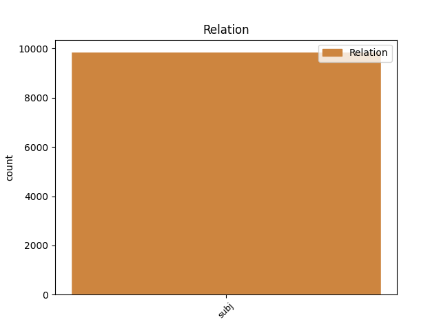
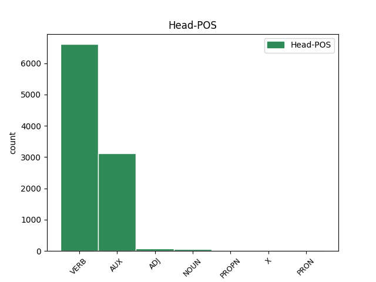
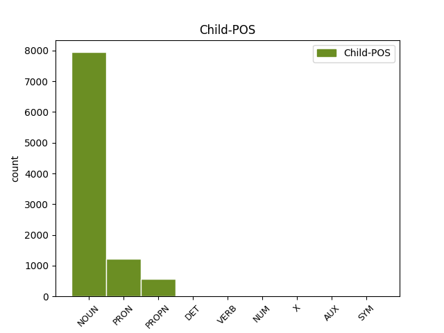

Distribution of features within this leaf



Agreement Rules sorted by frequency.
- When the dependent token is the subject(subj) of the head token, and the dependent token is NOUN.
1 En _ _ _ _ 0 _ _ _
2 1991 _ _ _ _ 0 _ _ _
3 , _ _ _ _ 0 _ _ _
4 como _ _ _ _ 0 _ _ _
5 ya _ _ _ _ 0 _ _ _
6 está _ _ _ _ 0 _ _ _
7 indicado _ _ _ _ 0 _ _ _
8 en _ _ _ _ 0 _ _ _
9 el _ _ _ _ 0 _ _ _
10 párrafo _ _ _ _ 0 _ _ _
11 anterior _ _ _ _ 0 _ _ _
12 , _ _ _ _ 0 _ _ _
13 se _ _ _ _ 0 _ _ _
14 creó _ _ _ _ 0 _ _ _
15 un _ _ _ _ 0 _ _ _
16 equipo _ _ _ _ 0 _ _ _
17 ad _ _ _ _ 0 _ _ _
18 hoc _ _ _ _ 0 _ _ _
19 para _ _ _ _ 0 _ _ _
20 averiguar _ _ _ _ 0 _ _ _
21 como _ _ _ _ 0 _ _ _
22 se _ _ _ _ 0 _ _ _
23 podía poder AUX _ Mood=Ind|Number=Sing|Person=3|Tense=Imp|VerbForm=Fin 0 _ _ _
24 desarrollar _ _ _ _ 0 _ _ _
25 el _ _ _ _ 0 _ _ _
26 Dialogo dialogo NOUN _ Gender=Masc|Number=Sing 23 subj _ _
27 Social _ _ _ _ 0 _ _ _
28 , _ _ _ _ 0 _ _ _
29 este _ _ _ _ 0 _ _ _
30 equipo _ _ _ _ 0 _ _ _
31 estaba _ _ _ _ 0 _ _ _
32 formado _ _ _ _ 0 _ _ _
33 por _ _ _ _ 0 _ _ _
34 representantes _ _ _ _ 0 _ _ _
35 de _ _ _ _ 0 _ _ _
36 todas _ _ _ _ 0 _ _ _
37 las _ _ _ _ 0 _ _ _
38 organizaciones _ _ _ _ 0 _ _ _
39 relacionadas _ _ _ _ 0 _ _ _
40 con _ _ _ _ 0 _ _ _
41 CES _ _ _ _ 0 _ _ _
42 , _ _ _ _ 0 _ _ _
43 UNICE _ _ _ _ 0 _ _ _
44 y _ _ _ _ 0 _ _ _
45 CEEP _ _ _ _ 0 _ _ _
46 ; _ _ _ _ 0 _ _ _
1 Una _ _ _ _ 0 _ _ _
2 vez _ _ _ _ 0 _ _ _
3 que _ _ _ _ 0 _ _ _
4 el _ _ _ _ 0 _ _ _
5 Hijo _ _ _ _ 0 _ _ _
6 de _ _ _ _ 0 _ _ _
7 Krypton _ _ _ _ 0 _ _ _
8 suelta _ _ _ _ 0 _ _ _
9 el _ _ _ _ 0 _ _ _
10 misil _ _ _ _ 0 _ _ _
11 , _ _ _ _ 0 _ _ _
12 este este PRON _ Gender=Masc|Number=Sing|PronType=Dem 13 subj _ _
13 intenta intentar VERB _ Mood=Ind|Number=Sing|Person=3|Tense=Pres|VerbForm=Fin 0 _ _ _
14 huir _ _ _ _ 0 _ _ _
15 de _ _ _ _ 0 _ _ _
16 el _ _ _ _ 0 _ _ _
17 lugar _ _ _ _ 0 _ _ _
18 pero _ _ _ _ 0 _ _ _
19 es _ _ _ _ 0 _ _ _
20 atrapado _ _ _ _ 0 _ _ _
21 en _ _ _ _ 0 _ _ _
22 la _ _ _ _ 0 _ _ _
23 explosión _ _ _ _ 0 _ _ _
24 . _ _ _ _ 0 _ _ _
1 Jazmin _ _ _ _ 0 _ _ _
2 es _ _ _ _ 0 _ _ _
3 todo _ _ _ _ 0 _ _ _
4 lo _ _ _ _ 0 _ _ _
5 contrario _ _ _ _ 0 _ _ _
6 , _ _ _ _ 0 _ _ _
7 es _ _ _ _ 0 _ _ _
8 tímida _ _ _ _ 0 _ _ _
9 y _ _ _ _ 0 _ _ _
10 callada _ _ _ _ 0 _ _ _
11 , _ _ _ _ 0 _ _ _
12 pero _ _ _ _ 0 _ _ _
13 siempre _ _ _ _ 0 _ _ _
14 es _ _ _ _ 0 _ _ _
15 arrastrada _ _ _ _ 0 _ _ _
16 por _ _ _ _ 0 _ _ _
17 las _ _ _ _ 0 _ _ _
18 locuras _ _ _ _ 0 _ _ _
19 y _ _ _ _ 0 _ _ _
20 travesuras _ _ _ _ 0 _ _ _
21 que _ _ _ _ 0 _ _ _
22 inventa inventar VERB _ Mood=Ind|Number=Sing|Person=3|Tense=Pres|VerbForm=Fin 0 _ _ _
23 Alma alma PROPN _ Gender=Fem|Number=Sing 22 subj _ SpaceAfter=No
24 . _ _ _ _ 0 _ _ _
1 Project _ _ _ _ 0 _ _ _
2 fue _ _ _ _ 0 _ _ _
3 producido _ _ _ _ 0 _ _ _
4 por _ _ _ _ 0 _ _ _
5 el _ _ _ _ 0 _ _ _
6 cantante _ _ _ _ 0 _ _ _
7 japonés _ _ _ _ 0 _ _ _
8 Tsunku _ _ _ _ 0 _ _ _
9 , _ _ _ _ 0 _ _ _
10 mientras _ _ _ _ 0 _ _ _
11 el el DET _ Definite=Def|Gender=Masc|Number=Sing|PronType=Art 12 subj _ _
12 buscaba buscar NOUN _ Number=Sing 0 _ _ _
13 nuevos _ _ _ _ 0 _ _ _
14 talentos _ _ _ _ 0 _ _ _
15 taiwaneses _ _ _ _ 0 _ _ _
16 para _ _ _ _ 0 _ _ _
17 iniciar _ _ _ _ 0 _ _ _
18 la _ _ _ _ 0 _ _ _
19 audición _ _ _ _ 0 _ _ _
20 en _ _ _ _ 0 _ _ _
21 2007 _ _ _ _ 0 _ _ _
22 , _ _ _ _ 0 _ _ _
23 con _ _ _ _ 0 _ _ _
24 el _ _ _ _ 0 _ _ _
25 proposito _ _ _ _ 0 _ _ _
26 de _ _ _ _ 0 _ _ _
27 hacer _ _ _ _ 0 _ _ _
28 conocer _ _ _ _ 0 _ _ _
29 a _ _ _ _ 0 _ _ _
30 el _ _ _ _ 0 _ _ _
31 grupo _ _ _ _ 0 _ _ _
32 por _ _ _ _ 0 _ _ _
33 el _ _ _ _ 0 _ _ _
34 resto _ _ _ _ 0 _ _ _
35 de _ _ _ _ 0 _ _ _
36 Asia _ _ _ _ 0 _ _ _
37 . _ _ _ _ 0 _ _ _
1 De _ _ _ _ 0 _ _ _
2 las _ _ _ _ 0 _ _ _
3 8 _ _ _ _ 0 _ _ _
4 porciones _ _ _ _ 0 _ _ _
5 , _ _ _ _ 0 _ _ _
6 cuatro cuatro NUM _ Number=Plur|NumType=Card 7 subj _ _
7 correspondieron corresponder VERB _ Mood=Ind|Number=Plur|Person=3|Tense=Past|VerbForm=Fin 0 _ _ _
8 a _ _ _ _ 0 _ _ _
9 el _ _ _ _ 0 _ _ _
10 rey _ _ _ _ 0 _ _ _
11 , _ _ _ _ 0 _ _ _
12 una _ _ _ _ 0 _ _ _
13 a _ _ _ _ 0 _ _ _
14 el _ _ _ _ 0 _ _ _
15 conde _ _ _ _ 0 _ _ _
16 de _ _ _ _ 0 _ _ _
17 el _ _ _ _ 0 _ _ _
18 Rosellón _ _ _ _ 0 _ _ _
19 Nuño _ _ _ _ 0 _ _ _
20 Sánchez _ _ _ _ 0 _ _ _
21 , _ _ _ _ 0 _ _ _
22 una _ _ _ _ 0 _ _ _
23 a _ _ _ _ 0 _ _ _
24 el _ _ _ _ 0 _ _ _
25 obispo _ _ _ _ 0 _ _ _
26 de _ _ _ _ 0 _ _ _
27 Barcelona _ _ _ _ 0 _ _ _
28 Berenguer _ _ _ _ 0 _ _ _
29 de _ _ _ _ 0 _ _ _
30 Palou _ _ _ _ 0 _ _ _
31 , _ _ _ _ 0 _ _ _
32 una _ _ _ _ 0 _ _ _
33 a _ _ _ _ 0 _ _ _
34 el _ _ _ _ 0 _ _ _
35 Conde _ _ _ _ 0 _ _ _
36 de _ _ _ _ 0 _ _ _
37 Ampurias _ _ _ _ 0 _ _ _
38 y _ _ _ _ 0 _ _ _
39 finalmente _ _ _ _ 0 _ _ _
40 otra _ _ _ _ 0 _ _ _
41 a _ _ _ _ 0 _ _ _
42 el _ _ _ _ 0 _ _ _
43 vizconde _ _ _ _ 0 _ _ _
44 de _ _ _ _ 0 _ _ _
45 Bearn _ _ _ _ 0 _ _ _
46 . _ _ _ _ 0 _ _ _
1 Así _ _ _ _ 0 _ _ _
2 , _ _ _ _ 0 _ _ _
3 entiende _ _ _ _ 0 _ _ _
4 que _ _ _ _ 0 _ _ _
5 el _ _ _ _ 0 _ _ _
6 que _ _ _ _ 0 _ _ _
7 alguien _ _ _ _ 0 _ _ _
8 haga hacer VERB _ Mood=Sub|Number=Sing|Person=3|Tense=Pres|VerbForm=Fin 21 subj _ _
9 un _ _ _ _ 0 _ _ _
10 resultado _ _ _ _ 0 _ _ _
11 extraordinario _ _ _ _ 0 _ _ _
12 -- _ _ _ _ 0 _ _ _
13 como _ _ _ _ 0 _ _ _
14 ganar _ _ _ _ 0 _ _ _
15 ocho _ _ _ _ 0 _ _ _
16 partidas _ _ _ _ 0 _ _ _
17 de _ _ _ _ 0 _ _ _
18 nueve _ _ _ _ 0 _ _ _
19 jugadas _ _ _ _ 0 _ _ _
20 -- _ _ _ _ 0 _ _ _
21 es ser AUX _ Mood=Ind|Number=Sing|Person=3|Tense=Pres|VerbForm=Fin 0 _ _ _
22 mucho _ _ _ _ 0 _ _ _
23 más _ _ _ _ 0 _ _ _
24 improbable _ _ _ _ 0 _ _ _
25 que _ _ _ _ 0 _ _ _
26 ganar _ _ _ _ 0 _ _ _
27 seis _ _ _ _ 0 _ _ _
28 partidas _ _ _ _ 0 _ _ _
29 de _ _ _ _ 0 _ _ _
30 nueve _ _ _ _ 0 _ _ _
31 , _ _ _ _ 0 _ _ _
32 aún _ _ _ _ 0 _ _ _
33 cuando _ _ _ _ 0 _ _ _
34 en _ _ _ _ 0 _ _ _
35 el _ _ _ _ 0 _ _ _
36 primer _ _ _ _ 0 _ _ _
37 caso _ _ _ _ 0 _ _ _
38 los _ _ _ _ 0 _ _ _
39 jugadores _ _ _ _ 0 _ _ _
40 fueran _ _ _ _ 0 _ _ _
41 más _ _ _ _ 0 _ _ _
42 débiles _ _ _ _ 0 _ _ _
43 . _ _ _ _ 0 _ _ _
1 El _ _ _ _ 0 _ _ _
2 doodle doodle X _ Gender=Masc|Number=Sing 5 subj _ _
3 de _ _ _ _ 0 _ _ _
4 Google _ _ _ _ 0 _ _ _
5 es ser AUX _ Mood=Ind|Number=Sing|Person=3|Tense=Pres|VerbForm=Fin 0 _ _ _
6 la _ _ _ _ 0 _ _ _
7 mejor _ _ _ _ 0 _ _ _
8 cara _ _ _ _ 0 _ _ _
9 desde _ _ _ _ 0 _ _ _
10 que _ _ _ _ 0 _ _ _
11 se _ _ _ _ 0 _ _ _
12 homenajease _ _ _ _ 0 _ _ _
13 a _ _ _ _ 0 _ _ _
14 los _ _ _ _ 0 _ _ _
15 distintos _ _ _ _ 0 _ _ _
16 personajes _ _ _ _ 0 _ _ _
17 de _ _ _ _ 0 _ _ _
18 el _ _ _ _ 0 _ _ _
19 mundo _ _ _ _ 0 _ _ _
20 entre _ _ _ _ 0 _ _ _
21 los _ _ _ _ 0 _ _ _
22 que _ _ _ _ 0 _ _ _
23 se _ _ _ _ 0 _ _ _
24 encuentran _ _ _ _ 0 _ _ _
25 científicos _ _ _ _ 0 _ _ _
26 , _ _ _ _ 0 _ _ _
27 descubridores _ _ _ _ 0 _ _ _
28 y _ _ _ _ 0 _ _ _
29 artistas _ _ _ _ 0 _ _ _
30 en _ _ _ _ 0 _ _ _
31 general _ _ _ _ 0 _ _ _
32 . _ _ _ _ 0 _ _ _
1 " _ _ _ _ 0 _ _ _
2 Ferrari _ _ _ _ 0 _ _ _
3 está _ _ _ _ 0 _ _ _
4 muy _ _ _ _ 0 _ _ _
5 acostumbrada _ _ _ _ 0 _ _ _
6 a _ _ _ _ 0 _ _ _
7 ganar _ _ _ _ 0 _ _ _
8 y _ _ _ _ 0 _ _ _
9 no _ _ _ _ 0 _ _ _
10 creo _ _ _ _ 0 _ _ _
11 que _ _ _ _ 0 _ _ _
12 se _ _ _ _ 0 _ _ _
13 pongan _ _ _ _ 0 _ _ _
14 demasiado _ _ _ _ 0 _ _ _
15 nerviosos _ _ _ _ 0 _ _ _
16 si _ _ _ _ 0 _ _ _
17 se _ _ _ _ 0 _ _ _
18 llega _ _ _ _ 0 _ _ _
19 a _ _ _ _ 0 _ _ _
20 las _ _ _ _ 0 _ _ _
21 últimas _ _ _ _ 0 _ _ _
22 carreras _ _ _ _ 0 _ _ _
23 apretados _ _ _ _ 0 _ _ _
24 , _ _ _ _ 0 _ _ _
25 y _ _ _ _ 0 _ _ _
26 tanto _ _ _ _ 0 _ _ _
27 Hamilton _ _ _ _ 0 _ _ _
28 , _ _ _ _ 0 _ _ _
29 como _ _ _ _ 0 _ _ _
30 Button _ _ _ _ 0 _ _ _
31 y _ _ _ _ 0 _ _ _
32 yo _ _ _ _ 0 _ _ _
33 , _ _ _ _ 0 _ _ _
34 que _ _ _ _ 0 _ _ _
35 ya _ _ _ _ 0 _ _ _
36 tenemos _ _ _ _ 0 _ _ _
37 algún _ _ _ _ 0 _ _ _
38 Mundial _ _ _ _ 0 _ _ _
39 conseguido _ _ _ _ 0 _ _ _
40 , _ _ _ _ 0 _ _ _
41 creo _ _ _ _ 0 _ _ _
42 que _ _ _ _ 0 _ _ _
43 vamos _ _ _ _ 0 _ _ _
44 a _ _ _ _ 0 _ _ _
45 afrontar _ _ _ _ 0 _ _ _
46 este _ _ _ _ 0 _ _ _
47 final _ _ _ _ 0 _ _ _
48 de _ _ _ _ 0 _ _ _
49 campeonato _ _ _ _ 0 _ _ _
50 más _ _ _ _ 0 _ _ _
51 tranquilos _ _ _ _ 0 _ _ _
52 que _ _ _ _ 0 _ _ _
53 los _ _ _ _ 0 _ _ _
54 dos _ _ _ _ 0 _ _ _
55 pilotos _ _ _ _ 0 _ _ _
56 de _ _ _ _ 0 _ _ _
57 Red _ _ _ _ 0 _ _ _
58 Bull _ _ _ _ 0 _ _ _
59 " _ _ _ _ 0 _ _ _
60 , _ _ _ _ 0 _ _ _
61 aseguró asegurar VERB _ Mood=Ind|Number=Sing|Person=3|Tense=Past|VerbForm=Fin 0 _ _ _
62 quien _ _ _ _ 0 _ _ _
63 como _ _ _ _ 0 _ _ _
64 mejor _ _ _ _ 0 _ _ _
65 posición _ _ _ _ 0 _ _ _
66 en _ _ _ _ 0 _ _ _
67 su _ _ _ _ 0 _ _ _
68 propio _ _ _ _ 0 _ _ _
69 historial _ _ _ _ 0 _ _ _
70 , _ _ _ _ 0 _ _ _
71 fue ser AUX _ Mood=Ind|Number=Sing|Person=3|Tense=Past|VerbForm=Fin 61 subj _ _
72 un _ _ _ _ 0 _ _ _
73 segundo _ _ _ _ 0 _ _ _
74 lugar _ _ _ _ 0 _ _ _
75 en _ _ _ _ 0 _ _ _
76 2005 _ _ _ _ 0 _ _ _
77 y _ _ _ _ 0 _ _ _
78 por _ _ _ _ 0 _ _ _
79 supuesto _ _ _ _ 0 _ _ _
80 aguarda _ _ _ _ 0 _ _ _
81 que _ _ _ _ 0 _ _ _
82 la _ _ _ _ 0 _ _ _
83 victoria _ _ _ _ 0 _ _ _
84 llegue _ _ _ _ 0 _ _ _
85 en _ _ _ _ 0 _ _ _
86 esta _ _ _ _ 0 _ _ _
87 ocasión _ _ _ _ 0 _ _ _
88 . _ _ _ _ 0 _ _ _
1 Según _ _ _ _ 0 _ _ _
2 la _ _ _ _ 0 _ _ _
3 Oficina _ _ _ _ 0 _ _ _
4 de _ _ _ _ 0 _ _ _
5 el _ _ _ _ 0 _ _ _
6 Censo _ _ _ _ 0 _ _ _
7 de _ _ _ _ 0 _ _ _
8 los _ _ _ _ 0 _ _ _
9 Estados _ _ _ _ 0 _ _ _
10 Unidos _ _ _ _ 0 _ _ _
11 , _ _ _ _ 0 _ _ _
12 Terril _ _ _ _ 0 _ _ _
13 tiene _ _ _ _ 0 _ _ _
14 una _ _ _ _ 0 _ _ _
15 superficie _ _ _ _ 0 _ _ _
16 total _ _ _ _ 0 _ _ _
17 de _ _ _ _ 0 _ _ _
18 1.41 _ _ _ _ 0 _ _ _
19 km _ _ _ _ 0 _ _ _
20 ² _ _ _ _ 0 _ _ _
21 , _ _ _ _ 0 _ _ _
22 de _ _ _ _ 0 _ _ _
23 la _ _ _ _ 0 _ _ _
24 cual _ _ _ _ 0 _ _ _
25 1.41 _ _ _ _ 0 _ _ _
26 km _ _ _ _ 0 _ _ _
27 ² _ _ _ _ 0 _ _ _
28 corresponden _ _ _ _ 0 _ _ _
29 a _ _ _ _ 0 _ _ _
30 tierra _ _ _ _ 0 _ _ _
31 firme _ _ _ _ 0 _ _ _
32 y _ _ _ _ 0 _ _ _
33 ( _ _ _ _ 0 _ _ _
34 0 _ _ _ _ 0 _ _ _
35 % _ _ _ _ 0 _ _ _
36 ) _ _ _ _ 0 _ _ _
37 0 _ _ _ _ 0 _ _ _
38 km _ _ _ _ 0 _ _ _
39 ² ² SYM _ Number=Sing|Person=2 40 subj _ _
40 es ser AUX _ Mood=Ind|Number=Sing|Person=3|Tense=Pres|VerbForm=Fin 0 _ _ _
41 agua _ _ _ _ 0 _ _ _
42 . _ _ _ _ 0 _ _ _
Disagree Examples:
1 Amaya _ _ _ _ 0 _ _ _
2 refirió _ _ _ _ 0 _ _ _
3 que _ _ _ _ 0 _ _ _
4 a _ _ _ _ 0 _ _ _
5 nivel _ _ _ _ 0 _ _ _
6 nacional _ _ _ _ 0 _ _ _
7 hay _ _ _ _ 0 _ _ _
8 7,870 _ _ _ _ 0 _ _ _
9 trabajadores _ _ _ _ 0 _ _ _
10 no _ _ _ _ 0 _ _ _
11 docentes _ _ _ _ 0 _ _ _
12 , _ _ _ _ 0 _ _ _
13 quienes _ _ _ _ 0 _ _ _
14 " _ _ _ _ 0 _ _ _
15 hemos _ _ _ _ 0 _ _ _
16 decidido _ _ _ _ 0 _ _ _
17 que _ _ _ _ 0 _ _ _
18 si _ _ _ _ 0 _ _ _
19 vamos _ _ _ _ 0 _ _ _
20 a _ _ _ _ 0 _ _ _
21 paro _ _ _ _ 0 _ _ _
22 el _ _ _ _ 0 _ _ _
23 lunes _ _ _ _ 0 _ _ _
24 ( _ _ _ _ 0 _ _ _
25 hoy _ _ _ _ 0 _ _ _
26 ) _ _ _ _ 0 _ _ _
27 se _ _ _ _ 0 _ _ _
28 afectará afectar VERB _ Mood=Ind|Number=Sing|Person=3|Tense=Fut|VerbForm=Fin 0 _ _ _
29 las _ _ _ _ 0 _ _ _
30 clases clase NOUN _ Gender=Fem|Number=Plur 28 subj _ SpaceAfter=No
31 , _ _ _ _ 0 _ _ _
32 porque _ _ _ _ 0 _ _ _
33 nosotros _ _ _ _ 0 _ _ _
34 somos _ _ _ _ 0 _ _ _
35 los _ _ _ _ 0 _ _ _
36 que _ _ _ _ 0 _ _ _
37 estamos _ _ _ _ 0 _ _ _
38 en _ _ _ _ 0 _ _ _
39 los _ _ _ _ 0 _ _ _
40 centros _ _ _ _ 0 _ _ _
41 educativos _ _ _ _ 0 _ _ _
42 " _ _ _ _ 0 _ _ _
43 , _ _ _ _ 0 _ _ _
44 sentenció _ _ _ _ 0 _ _ _
45 . _ _ _ _ 0 _ _ _
1 Tobias tobias PROPN _ Gender=Fem|Number=Plur 15 subj _ _
2 Sammet _ _ _ _ 0 _ _ _
3 , _ _ _ _ 0 _ _ _
4 Nacido _ _ _ _ 0 _ _ _
5 el _ _ _ _ 0 _ _ _
6 21 _ _ _ _ 0 _ _ _
7 de _ _ _ _ 0 _ _ _
8 noviembre _ _ _ _ 0 _ _ _
9 de _ _ _ _ 0 _ _ _
10 1977 _ _ _ _ 0 _ _ _
11 en _ _ _ _ 0 _ _ _
12 Fulda _ _ _ _ 0 _ _ _
13 , _ _ _ _ 0 _ _ _
14 Alemania _ _ _ _ 0 _ _ _
15 es ser AUX _ Mood=Ind|Number=Sing|Person=3|Tense=Pres|VerbForm=Fin 0 _ _ _
16 el _ _ _ _ 0 _ _ _
17 vocalista _ _ _ _ 0 _ _ _
18 , _ _ _ _ 0 _ _ _
19 teclista _ _ _ _ 0 _ _ _
20 y _ _ _ _ 0 _ _ _
21 compositor _ _ _ _ 0 _ _ _
22 de _ _ _ _ 0 _ _ _
23 la _ _ _ _ 0 _ _ _
24 banda _ _ _ _ 0 _ _ _
25 de _ _ _ _ 0 _ _ _
26 Power _ _ _ _ 0 _ _ _
27 metal _ _ _ _ 0 _ _ _
28 Edguy _ _ _ _ 0 _ _ _
29 , _ _ _ _ 0 _ _ _
30 también _ _ _ _ 0 _ _ _
31 conocido _ _ _ _ 0 _ _ _
32 por _ _ _ _ 0 _ _ _
33 su _ _ _ _ 0 _ _ _
34 proyecto _ _ _ _ 0 _ _ _
35 de _ _ _ _ 0 _ _ _
36 opera _ _ _ _ 0 _ _ _
37 metal _ _ _ _ 0 _ _ _
38 que _ _ _ _ 0 _ _ _
39 realizó _ _ _ _ 0 _ _ _
40 con _ _ _ _ 0 _ _ _
41 Avantasia _ _ _ _ 0 _ _ _
42 el _ _ _ _ 0 _ _ _
43 cual _ _ _ _ 0 _ _ _
44 incluye _ _ _ _ 0 _ _ _
45 grandes _ _ _ _ 0 _ _ _
46 músicos _ _ _ _ 0 _ _ _
47 tales _ _ _ _ 0 _ _ _
48 como _ _ _ _ 0 _ _ _
49 Andre _ _ _ _ 0 _ _ _
50 Matos _ _ _ _ 0 _ _ _
51 , _ _ _ _ 0 _ _ _
52 Kai _ _ _ _ 0 _ _ _
53 Hansen _ _ _ _ 0 _ _ _
54 , _ _ _ _ 0 _ _ _
55 Michael _ _ _ _ 0 _ _ _
56 Kiske _ _ _ _ 0 _ _ _
57 , _ _ _ _ 0 _ _ _
58 Timo _ _ _ _ 0 _ _ _
59 Tolkki _ _ _ _ 0 _ _ _
60 , _ _ _ _ 0 _ _ _
61 Roy _ _ _ _ 0 _ _ _
62 Khan _ _ _ _ 0 _ _ _
63 y _ _ _ _ 0 _ _ _
64 Jorn _ _ _ _ 0 _ _ _
65 Lande _ _ _ _ 0 _ _ _
66 . _ _ _ _ 0 _ _ _
1 Algunos _ _ _ _ 0 _ _ _
2 de _ _ _ _ 0 _ _ _
3 los _ _ _ _ 0 _ _ _
4 principales _ _ _ _ 0 _ _ _
5 edificios _ _ _ _ 0 _ _ _
6 son ser AUX _ Mood=Ind|Number=Plur|Person=3|Tense=Pres|VerbForm=Fin 0 _ _ _
7 la _ _ _ _ 0 _ _ _
8 iglesia iglesia NOUN _ Gender=Fem|Number=Sing 6 subj _ _
9 de _ _ _ _ 0 _ _ _
10 el _ _ _ _ 0 _ _ _
11 Salvador _ _ _ _ 0 _ _ _
12 " _ _ _ _ 0 _ _ _
13 Na _ _ _ _ 0 _ _ _
14 Séniakh _ _ _ _ 0 _ _ _
15 " _ _ _ _ 0 _ _ _
16 ( _ _ _ _ 0 _ _ _
17 1675 _ _ _ _ 0 _ _ _
18 ) _ _ _ _ 0 _ _ _
19 , _ _ _ _ 0 _ _ _
20 la _ _ _ _ 0 _ _ _
21 iglesia _ _ _ _ 0 _ _ _
22 de _ _ _ _ 0 _ _ _
23 San _ _ _ _ 0 _ _ _
24 Gregorio _ _ _ _ 0 _ _ _
25 ( _ _ _ _ 0 _ _ _
26 1670 _ _ _ _ 0 _ _ _
27 ) _ _ _ _ 0 _ _ _
28 , _ _ _ _ 0 _ _ _
29 y _ _ _ _ 0 _ _ _
30 las _ _ _ _ 0 _ _ _
31 iglesias _ _ _ _ 0 _ _ _
32 barbicanas _ _ _ _ 0 _ _ _
33 de _ _ _ _ 0 _ _ _
34 San _ _ _ _ 0 _ _ _
35 Juan _ _ _ _ 0 _ _ _
36 el _ _ _ _ 0 _ _ _
37 Apóstol _ _ _ _ 0 _ _ _
38 ( _ _ _ _ 0 _ _ _
39 1683 _ _ _ _ 0 _ _ _
40 ) _ _ _ _ 0 _ _ _
41 y _ _ _ _ 0 _ _ _
42 de _ _ _ _ 0 _ _ _
43 la _ _ _ _ 0 _ _ _
44 Resurrección _ _ _ _ 0 _ _ _
45 de _ _ _ _ 0 _ _ _
46 Cristo _ _ _ _ 0 _ _ _
47 ( _ _ _ _ 0 _ _ _
48 1670 _ _ _ _ 0 _ _ _
49 ) _ _ _ _ 0 _ _ _
50 . _ _ _ _ 0 _ _ _
1 Hasta _ _ _ _ 0 _ _ _
2 el _ _ _ _ 0 _ _ _
3 momento _ _ _ _ 0 _ _ _
4 un _ _ _ _ 0 _ _ _
5 total total NOUN _ Number=Sing 10 subj _ _
6 de _ _ _ _ 0 _ _ _
7 6 _ _ _ _ 0 _ _ _
8 equipos _ _ _ _ 0 _ _ _
9 diferentes _ _ _ _ 0 _ _ _
10 han haber AUX _ Mood=Ind|Number=Plur|Person=3|Tense=Pres|VerbForm=Fin 0 _ _ _
11 logrado _ _ _ _ 0 _ _ _
12 alzar _ _ _ _ 0 _ _ _
13 se _ _ _ _ 0 _ _ _
14 con _ _ _ _ 0 _ _ _
15 el _ _ _ _ 0 _ _ _
16 triunfo _ _ _ _ 0 _ _ _
17 en _ _ _ _ 0 _ _ _
18 esta _ _ _ _ 0 _ _ _
19 competición _ _ _ _ 0 _ _ _
20 desde _ _ _ _ 0 _ _ _
21 que _ _ _ _ 0 _ _ _
22 fuera _ _ _ _ 0 _ _ _
23 organizada _ _ _ _ 0 _ _ _
24 en _ _ _ _ 0 _ _ _
25 el _ _ _ _ 0 _ _ _
26 año _ _ _ _ 0 _ _ _
27 2006 _ _ _ _ 0 _ _ _
28 , _ _ _ _ 0 _ _ _
29 uno _ _ _ _ 0 _ _ _
30 distinto _ _ _ _ 0 _ _ _
31 en _ _ _ _ 0 _ _ _
32 cada _ _ _ _ 0 _ _ _
33 edición _ _ _ _ 0 _ _ _
34 , _ _ _ _ 0 _ _ _
35 siendo _ _ _ _ 0 _ _ _
36 el _ _ _ _ 0 _ _ _
37 FK _ _ _ _ 0 _ _ _
38 Berane _ _ _ _ 0 _ _ _
39 el _ _ _ _ 0 _ _ _
40 que _ _ _ _ 0 _ _ _
41 más _ _ _ _ 0 _ _ _
42 ascensos _ _ _ _ 0 _ _ _
43 a _ _ _ _ 0 _ _ _
44 Primera _ _ _ _ 0 _ _ _
45 División _ _ _ _ 0 _ _ _
46 posee _ _ _ _ 0 _ _ _
47 en _ _ _ _ 0 _ _ _
48 su _ _ _ _ 0 _ _ _
49 historial _ _ _ _ 0 _ _ _
50 . _ _ _ _ 0 _ _ _
1 La _ _ _ _ 0 _ _ _
2 banda banda NOUN _ Gender=Fem|Number=Sing 6 subj _ _
3 británica _ _ _ _ 0 _ _ _
4 The _ _ _ _ 0 _ _ _
5 Horrors _ _ _ _ 0 _ _ _
6 han haber AUX _ Mood=Ind|Number=Plur|Person=3|Tense=Pres|VerbForm=Fin 0 _ _ _
7 versionado _ _ _ _ 0 _ _ _
8 la _ _ _ _ 0 _ _ _
9 característica _ _ _ _ 0 _ _ _
10 ' _ _ _ _ 0 _ _ _
11 The _ _ _ _ 0 _ _ _
12 Best _ _ _ _ 0 _ _ _
13 Thing _ _ _ _ 0 _ _ _
14 I _ _ _ _ 0 _ _ _
15 Never _ _ _ _ 0 _ _ _
16 Had _ _ _ _ 0 _ _ _
17 ' _ _ _ _ 0 _ _ _
18 de _ _ _ _ 0 _ _ _
19 la _ _ _ _ 0 _ _ _
20 diosa _ _ _ _ 0 _ _ _
21 de _ _ _ _ 0 _ _ _
22 el _ _ _ _ 0 _ _ _
23 Ébano _ _ _ _ 0 _ _ _
24 y _ _ _ _ 0 _ _ _
25 artista _ _ _ _ 0 _ _ _
26 pop _ _ _ _ 0 _ _ _
27 Beyonce _ _ _ _ 0 _ _ _
28 . _ _ _ _ 0 _ _ _